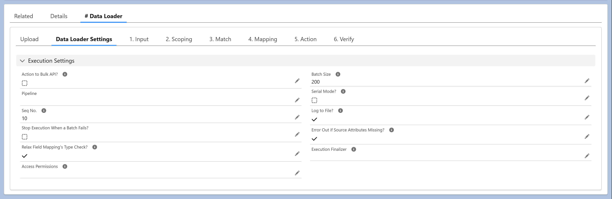

A #Data Loader is a rules-driven Executable that packages input, transformation logic, and a target action into a reusable configuration unit — turning CSV uploads into repeatable, governed data operations inside Salesforce.
The input is a CSV file uploaded by the user. The transformation logic is defined declaratively through field mappings, formulas, and built-in functions. The target action can be any supported DML operation — Insert, Update, Upsert, Delete, Merge, Lead Convert, Email/Bell Notification, Approval, and more — applied to the records produced by the transformations.
Built natively with LWC and Apex, the #Data Loader runs entirely within your Salesforce org. Compared to traditional file-based loaders, it offers:
Together, these capabilities turn ad-hoc file uploads into accessible, repeatable, transformable, governed, and secure data operations — fully integrated into Salesforce.
